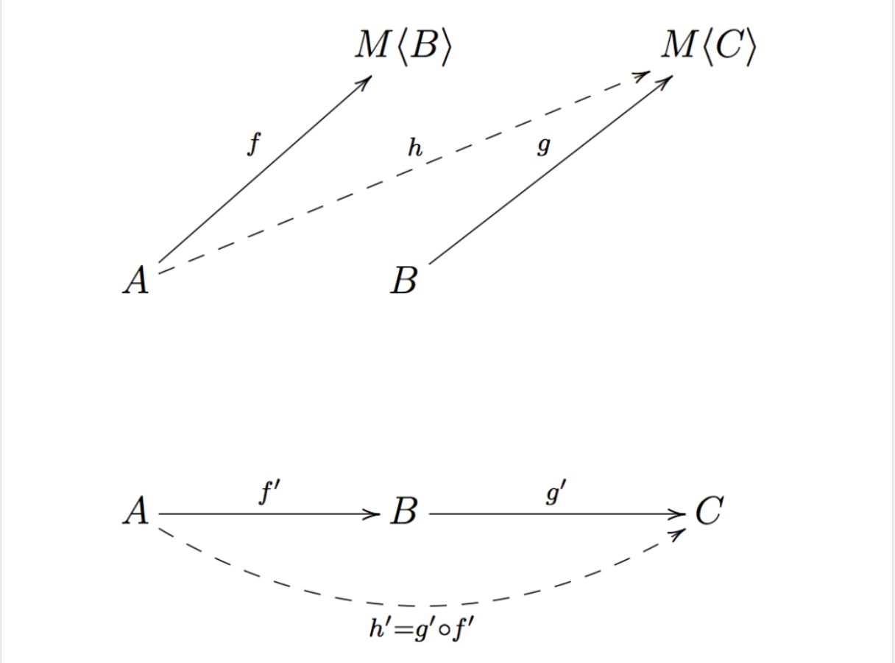

(Vi) Kleisli composition và ứng dụng thực tế

(Vi) Kleisli composition và ứng dụng thực tế
Giả sử chúng ta có 2 hàm số monadic (monadic function) f và g như sau
note: monadic function là hàm số nhận vào một tham số a bất kỳ và trả vệ một giá trị b nằm trong 1 context/action hay một computation nào đó
f :: A -> T (B)
g :: B -> T (C) Liệu có cách nào để combine 2 hàm số f và g có kết quả trả về như sau
?? g f :: A -> T (C)
?? :: (B -> T (C)) -> (A -> T (B))-> (A->T(C)) -- thay g f vào vế trái chúng ta cần
g' :: T (B) -> T (C)để có
g' . f :: (TB ->TC)-> (A->TB) -> (A ->TC)vì
(=<<) :: B -> T(C) -> T(B) -> T(C)
cho nên
g' = (=<<) gdo đó
f :: A -> T (B)
g :: B -> T (C)
g' :: T B -> T C where g' = (=<<) g)
g' . f :: A -> T C
?? g f = g' .f = ((=<<) g) . f
>=> g f = g' .f = ((=<<) g) . f
?? -> >=> còn gọi là fishy operator
g >=> f :: (B -> T (C)) -> (A -> T (B))-> (A->T(C)) -- Kleisli compositionỨng dụng của Kleisli composition
Như chúng ta có thể thấy ở trên, bản chất của Kleisli composition vẫn dựa trên monadic function và hàm bind >>= của Monad.
Chúng ta ít thấy Kleisli được sử dụng trong thực tế, tuy nhiên với thư viện xml-conduit khi làm việc với xml chúng ta thấy được sự tiện lợi khi dùng Kleisli (>=>)
{-# LANGUAGE OverloadedStrings #-}
module Main where
import Prelude hiding (readFile)
import Text.XML
import Text.XML.Cursor
import qualified Data.Text as T
import System.Directory(getCurrentDirectory)
main :: IO ()
main = do
currDir <- getCurrentDirectory
putStrLn $ "currDir " <> currDir
doc <- readFile def $ currDir <> "/test2.xml"
let cursor = fromDocument doc
print $ T.concat $
cursor $// element "h2"
>=> attributeIs "class" "bar"
>=> precedingSibling
>=> element "h1"
&// contentvới file test2.xml có nội dung như sau
<html>
<head>
<title>Headings</title>
</head>
<body>
<hgroup>
<h1>Heading 1 foo</h1>
<h2 class="foo">Heading 2 foo</h2>
</hgroup>
<hgroup>
<h1>Heading 1 bar</h1>
<h2 class="bar">Heading 2 bar</h2>
</hgroup>
</body>
</html>
Đoạn code trên sẽ in ra kết quả gì, bạn hãy thử xem nhé!
hint: cần tìm các element tag là h2 và thoả class name là bar, sau đó tìm element kế trước nó và in ra content
Bạn có thể tham khảo repo này nhé https://github.com/ahaxu/test-xml/